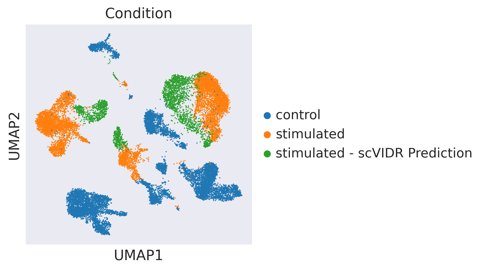

SupplementalFigure7
#Create Access to my code
import sys
sys.path.insert(1, '../vidr/')
#Import hte vaedr functions we have created
from vidr import VIDR
from PCAEval import PCAEval
from utils import *
#Import important modules
import scanpy as sc
import pandas as pd
import numpy as np
import torch
import seaborn as sns
from scipy import stats
from scipy import linalg
from scipy import spatial
from anndata import AnnData
from scipy import sparse
from statannotations.Annotator import Annotator
from matplotlib import pyplot as plt
import warnings
warnings.filterwarnings("ignore")
sc.set_figure_params(dpi = 150, frameon = True)
sns.set_style("dark")
sc.settings.figdir = "../figures"
kang_adata = sc.read_h5ad("../data/kang2018.h5ad")
kang_adata.obs["study"] = "Kang et al"
zheng_adata = sc.read_h5ad("../data/zheng2017.h5ad")
zheng_adata.obs["cell_type"].replace("CD4 T cells", "CD4T", inplace=True)
zheng_adata.obs["cell_type"].replace("B cells", "B", inplace=True)
zheng_adata.obs["cell_type"].replace("CD14+ Monocytes", "CD14+Mono", inplace=True)
zheng_adata.obs["cell_type"].replace("NK cells", "NK", inplace=True)
zheng_adata.obs["cell_type"].replace("CD8 T cells", "CD8T", inplace=True)
zheng_adata.obs["cell_type"].replace("Dendritic cells", "Dendritic", inplace=True)
zheng_adata.obs["cell_type"].replace("FCGR3A+ Monocytes", "FCGR3A+Mono", inplace=True)
adata = kang_adata.concatenate(zheng_adata)
adata.obs["study"].unique()
array(['Kang et al', 'Zheng et al'], dtype=object)
adata.obs["Study"] = ["Study A" if i == "Kang et al" else "Study B"]
---------------------------------------------------------------------------
NameError Traceback (most recent call last)
Cell In[9], line 1
----> 1 adata.obs["Study"] = ["Study A" if i == "Kang et al" else "Study B"]
NameError: name 'i' is not defined
study_labels = adata.obs["study"].values
cell_labels = adata.obs["cell_type"].values
adata.obs["study_cell"] = [f"{study}-{cell}" for study, cell in zip(study_labels, cell_labels)]
adata.obs["study_cell"]
index
AAACATACCAAGCT-1-stimulated-0 Kang et al-NK
AAACATACCCCTAC-1-stimulated-0 Kang et al-Dendritic
AAACATACCCGTAA-1-stimulated-0 Kang et al-CD4T
AAACATACCCTCGT-1-stimulated-0 Kang et al-B
AAACATACGAGGTG-1-stimulated-0 Kang et al-CD4T
...
TTTCGAACTCTCAT-1-1-1 Zheng et al-CD14+Mono
TTTCTACTGAGGCA-1-1-1 Zheng et al-B
TTTCTACTTCCTCG-1-1-1 Zheng et al-B
TTTGCATGAGAGGC-1-1-1 Zheng et al-B
TTTGCATGCCTCAC-1-1-1 Zheng et al-CD4T
Name: study_cell, Length: 19516, dtype: object
#Training model
cell = "Zheng et al-B"
train_adata, test_adata = prepare_data(adata, "study_cell", "condition", cell, "stimulated", normalized = True)
vae = VIDR(train_adata, linear_decoder = False)
# vae.train(
# max_epochs=100,
# batch_size=128,
# early_stopping=True,
# early_stopping_patience=25)
# vae.save(f"../../data/VAE_OOD_Prediction_IFNB_7000g_{cell}.pt", overwrite = True)
vae = vae.load(f"../../data/VAE_OOD_Prediction_IFNB_7000g_{cell}.pt/", train_adata)
[34mINFO [0m Using batches from adata.obs[1m[[0m[32m"condition"[0m[1m][0m
[34mINFO [0m Using labels from adata.obs[1m[[0m[32m"study_cell"[0m[1m][0m
[34mINFO [0m Using data from adata.X
[34mINFO [0m Computing library size prior per batch
[34mINFO [0m Successfully registered anndata object containing [1;36m19516[0m cells, [1;36m5835[0m vars, [1;36m2[0m batches, [1;36m14[0m labels, and [1;36m0[0m
proteins. Also registered [1;36m0[0m extra categorical covariates and [1;36m0[0m extra continuous covariates.
[34mINFO [0m Please do not further modify adata until model is trained.
None
[34mINFO [0m Using data from adata.X
[34mINFO [0m Computing library size prior per batch
[34mINFO [0m Registered keys:[1m[[0m[32m'X'[0m, [32m'batch_indices'[0m, [32m'local_l_mean'[0m, [32m'local_l_var'[0m, [32m'labels'[0m[1m][0m
[34mINFO [0m Successfully registered anndata object containing [1;36m19516[0m cells, [1;36m5835[0m vars, [1;36m2[0m batches, [1;36m14[0m labels, and [1;36m0[0m
proteins. Also registered [1;36m0[0m extra categorical covariates and [1;36m0[0m extra continuous covariates.
None
#UMAP Projection of latent space
latent_X = vae.get_latent_representation(adata)
latent_adata = sc.AnnData(X=latent_X, obs=adata.obs.copy())
[34mINFO [0m Input adata not setup with scvi. attempting to transfer anndata setup
[34mINFO [0m Using data from adata.X
[34mINFO [0m Computing library size prior per batch
[34mINFO [0m Registered keys:[1m[[0m[32m'X'[0m, [32m'batch_indices'[0m, [32m'local_l_mean'[0m, [32m'local_l_var'[0m, [32m'labels'[0m[1m][0m
[34mINFO [0m Successfully registered anndata object containing [1;36m19516[0m cells, [1;36m5835[0m vars, [1;36m2[0m batches, [1;36m14[0m labels, and [1;36m0[0m
proteins. Also registered [1;36m0[0m extra categorical covariates and [1;36m0[0m extra continuous covariates.
sc.pp.neighbors(latent_adata)
sc.tl.umap(latent_adata)
WARNING: You’re trying to run this on 100 dimensions of `.X`, if you really want this, set `use_rep='X'`.
Falling back to preprocessing with `sc.pp.pca` and default params.
from matplotlib import cm
latent_adata.obs["Study"] = ["Study A" if i == "Kang et al" else "Study B" for i in adata.obs.study]
latent_adata.obs["Cell Type"] = adata.obs["cell_type"]
latent_adata.obs["Condition"] = adata.obs["condition"]
for idx, label in enumerate(['Study', 'Cell Type', 'Condition']):
if label == "Cell Type":
palette = "tab10"
elif label == "Condition":
palette = cm.tab10.colors[:2]
else:
palette = "coolwarm"
print(palette)
ax = sc.pl.umap(
latent_adata,
color = label,
palette = palette
)
coolwarm

tab10
((0.12156862745098039, 0.4666666666666667, 0.7058823529411765), (1.0, 0.4980392156862745, 0.054901960784313725))

ctrl_key = "control"
treat_key = "stimulated"
study_A_key = "Kang et al"
study_B_key = "Zheng et al"
cell_type_to_predict = "B"
cell_type_key = "cell_type"
treatment_key = "condition"
study_key = "study"
studyA = vae.adata[vae.adata.obs[study_key] == study_A_key]
studyB = vae.adata[vae.adata.obs[study_key] == study_B_key]
ctrl_x = studyA[studyA.obs[treatment_key] == ctrl_key]
treat_x = studyA[studyA.obs[treatment_key] == treat_key]
ctrl_x = random_sample(ctrl_x, cell_type_key)
treat_x = random_sample(treat_x, cell_type_key)
#Balancing across treatments
new_adata = ctrl_x.concatenate(treat_x)
new_adata = random_sample(new_adata, treatment_key, max_or_min = "min", replacement = False)
#Densify Sparse Matrix
if sparse.issparse(new_adata.X):
new_adata.X = new_adata.X.A
if sparse.issparse(new_adata.X):
new_adata.X = new_adata.X.A
latent_X = vae.get_latent_representation(new_adata)
latent_adata = sc.AnnData(X=latent_X, obs = new_adata.obs.copy())
#Get deltas and control centroids for each cell tpye in the training dataset
deltas = []
latent_centroids = []
cell_types = np.unique(latent_adata.obs[cell_type_key])
for cell_i in cell_types:
if cell_i != cell_type_to_predict:
latent_ctrl = latent_adata[(latent_adata.obs[cell_type_key] == cell_i) & (latent_adata.obs[treatment_key] == ctrl_key)]
latent_treat = latent_adata[(latent_adata.obs[cell_type_key] == cell_i) & (latent_adata.obs[treatment_key] == treat_key)]
ctrl_centroid = np.average(latent_ctrl.X, axis = 0)
treat_centroid = np.average(latent_treat.X, axis = 0)
delta = treat_centroid - ctrl_centroid
deltas.append(delta)
latent_centroids.append(ctrl_centroid)
lr = LinearRegression()
reg = lr.fit(latent_centroids, deltas)
[34mINFO [0m Input adata not setup with scvi. attempting to transfer anndata setup
[34mINFO [0m Using data from adata.X
[34mINFO [0m Computing library size prior per batch
[34mINFO [0m Registered keys:[1m[[0m[32m'X'[0m, [32m'batch_indices'[0m, [32m'local_l_mean'[0m, [32m'local_l_var'[0m, [32m'labels'[0m[1m][0m
[34mINFO [0m Successfully registered anndata object containing [1;36m34118[0m cells, [1;36m5835[0m vars, [1;36m2[0m batches, [1;36m14[0m labels, and [1;36m0[0m
proteins. Also registered [1;36m0[0m extra categorical covariates and [1;36m0[0m extra continuous covariates.
scVIDR_pred_l = []
for cell_i in cell_types:
print(cell_i)
studyB_i = studyB[studyB.obs[cell_type_key] == cell_i]
print(studyB_i)
latent_cd_i = vae.get_latent_representation(studyB_i)
scVIDR_delta_i = reg.predict([np.average(latent_cd_i, axis = 0)])[0]
print(scVIDR_delta_i)
treat_pred = scVIDR_delta_i + latent_cd_i
predicted_cells = vae.module.generative(torch.Tensor(treat_pred))["px"].cpu().detach().numpy()
scvidr_pred_i = sc.AnnData(X=predicted_cells , obs=studyB_i.obs, var=studyB_i.var.copy())
scVIDR_pred_l.append(scvidr_pred_i)
B
View of AnnData object with n_obs × n_vars = 342 × 5835
obs: 'condition', 'n_counts', 'n_genes', 'mt_frac', 'cell_type', 'study', 'percent_mito', 'batch', 'study_cell', '_scvi_batch', '_scvi_labels', '_scvi_local_l_mean', '_scvi_local_l_var'
var: 'gene_symbol-0', 'n_cells-0', 'gene_symbol-0-1', 'n_cells-0-1', 'n_cells-1-1', 'means-1', 'dispersions-1', 'dispersions_norm-1'
uns: '_scvi'
obsm: 'X_pca', 'X_umap', 'X_tsne'
[34mINFO [0m Received view of anndata, making copy.
[-1.1875428 -0.9810512 -0.9034028 1.0080755 -2.822612 1.9888012
2.74437 -0.33823186 -3.4023392 0.8470795 -0.03016177 1.3572129
-0.8457316 -3.4008465 1.213508 1.0370331 -1.1089827 -1.5722971
1.2053063 2.8660097 0.45004186 1.5204619 -1.0602865 -1.1114156
0.301614 0.70524514 0.9615224 -0.6817345 2.7672496 -2.3375173
0.18527424 2.4289594 0.24793583 -0.726011 0.42058218 0.5782151
1.1462336 1.1313728 1.1815714 1.133357 0.7124855 -2.1059296
-0.75088096 0.42397344 -0.6244265 -1.408945 -0.9957286 1.0489578
-2.4219623 1.1971315 0.8377676 1.597843 0.11171508 1.5990009
0.06661261 1.3307991 -2.3222947 -1.991075 2.9358435 -3.5562167
-2.40971 1.4637101 -1.708941 -0.14157844 0.88943833 1.1244204
-0.13255906 1.9271634 1.816632 -1.457781 -1.0465343 -0.5875258
-0.644421 -0.37418714 0.23943686 1.9963083 -0.53932333 0.3764066
2.5318825 1.6942408 -0.01706064 1.1611979 -1.5354884 1.1831766
-0.674902 -0.65908533 -0.5784869 -0.02456892 0.267956 1.461221
1.9106774 0.6410176 0.8539256 -0.5936737 -1.4217625 0.7345071
-0.89355814 -2.7557802 -2.0694323 -0.89143234]
CD14+Mono
View of AnnData object with n_obs × n_vars = 480 × 5835
obs: 'condition', 'n_counts', 'n_genes', 'mt_frac', 'cell_type', 'study', 'percent_mito', 'batch', 'study_cell', '_scvi_batch', '_scvi_labels', '_scvi_local_l_mean', '_scvi_local_l_var'
var: 'gene_symbol-0', 'n_cells-0', 'gene_symbol-0-1', 'n_cells-0-1', 'n_cells-1-1', 'means-1', 'dispersions-1', 'dispersions_norm-1'
uns: '_scvi'
obsm: 'X_pca', 'X_umap', 'X_tsne'
[34mINFO [0m Received view of anndata, making copy.
[-1.2041175e+00 -3.0514174e+00 -1.4446522e+00 -3.9389330e-01
-9.4836414e-01 1.1055237e+00 -1.1520295e+00 4.0116787e-02
-2.9014158e+00 5.8153534e-01 -5.0091863e-01 -1.9939716e-01
-1.9363744e+00 -1.1380692e+00 -2.4287519e+00 2.5989165e+00
-1.0561948e+00 -5.0044703e-01 3.3151426e+00 5.8134747e-01
1.0803858e+00 1.4080013e+00 4.9392149e-01 4.4365448e-01
1.0247047e+00 3.6492100e+00 -7.4721205e-01 1.4867353e+00
-7.8549540e-01 -1.0052474e+00 1.4375372e+00 2.9561751e+00
1.6383094e-01 -2.1204300e+00 1.3107458e-01 -1.5256524e-01
1.4254522e+00 -1.8599950e+00 9.3772823e-01 1.9860005e+00
2.8303201e+00 -2.0080631e+00 5.4827201e-01 -3.8985783e-01
-5.6079036e-01 -1.3712947e+00 -8.7150276e-02 2.2762004e-01
-6.9477499e-02 3.5468185e+00 1.2131789e+00 -4.7857058e-01
-1.3864436e+00 7.2599429e-01 1.5970643e-01 -1.3825994e+00
-1.1580800e+00 -2.7688403e+00 2.7526360e+00 -5.7704103e-01
-1.5578332e+00 -1.2139424e+00 -5.8136767e-01 -4.7422573e-04
1.2485619e+00 3.2467145e-01 4.6399817e-01 1.4725683e+00
-2.6210469e-01 2.1186843e+00 -5.7030129e-01 -2.2062898e+00
8.4928060e-01 -1.2640805e+00 -1.5724812e+00 1.9698732e+00
-2.0398369e+00 2.1013670e+00 2.2438273e+00 1.0189614e+00
2.9227238e+00 3.9698398e-01 -2.4267313e+00 1.5167868e+00
1.4300747e+00 4.4676578e-01 3.8316676e-01 -3.0995114e+00
-6.3606822e-01 -2.1850471e+00 1.4864764e+00 4.9849486e-01
-3.0381327e+00 1.5367441e+00 1.6652093e+00 -5.1939034e-01
-9.0353703e-01 1.4298756e+00 -1.7350338e+00 -5.7713038e-01]
CD4T
View of AnnData object with n_obs × n_vars = 1144 × 5835
obs: 'condition', 'n_counts', 'n_genes', 'mt_frac', 'cell_type', 'study', 'percent_mito', 'batch', 'study_cell', '_scvi_batch', '_scvi_labels', '_scvi_local_l_mean', '_scvi_local_l_var'
var: 'gene_symbol-0', 'n_cells-0', 'gene_symbol-0-1', 'n_cells-0-1', 'n_cells-1-1', 'means-1', 'dispersions-1', 'dispersions_norm-1'
uns: '_scvi'
obsm: 'X_pca', 'X_umap', 'X_tsne'
[34mINFO [0m Received view of anndata, making copy.
[-4.0346456e-01 -9.3464512e-01 -9.3142927e-01 7.5309861e-01
-1.0687020e+00 4.9421346e-01 -6.8597950e-02 4.2571837e-01
-1.5406834e+00 6.5075827e-01 -8.3913374e-01 -2.1670046e-01
-9.8517376e-01 -7.6149088e-01 -5.4952830e-01 6.6485751e-01
2.4639300e-01 -1.2964544e-01 1.5703317e+00 2.1841638e+00
-2.7193972e-01 5.3137922e-01 -4.7335654e-02 3.5398790e-01
9.6218961e-01 9.0793848e-01 2.7514943e-01 5.1523304e-01
-2.0507485e-01 -1.6308824e+00 1.8068838e-01 1.7672596e+00
-9.4510674e-01 -5.0249010e-01 4.5657256e-01 5.8202557e-03
8.1230330e-01 3.8035274e-02 2.0520866e-02 1.3656390e+00
1.1805496e+00 -1.0071615e+00 -2.1695009e-01 -1.3029316e-01
-7.1284074e-01 -8.2660073e-01 -3.8867858e-01 -3.1534916e-01
-4.1927391e-01 1.0372124e+00 6.4745456e-02 1.1148586e+00
-9.9402785e-01 7.0683056e-01 9.0607613e-02 -1.5823251e-01
-1.3254135e+00 -1.9426062e+00 1.1062553e+00 -6.5879762e-01
-9.5066929e-01 -3.5818598e-01 1.3940121e-01 -1.7687833e-01
-2.1507907e-01 -5.4019129e-01 -1.9486116e-01 7.7302432e-01
1.0828315e+00 1.1681371e+00 -3.5457110e-01 -1.2553408e+00
4.7262192e-02 1.2390554e-01 -5.2509093e-01 1.4099476e+00
-7.1995258e-01 7.2153068e-01 1.5258768e+00 4.9319419e-01
5.8139831e-01 9.2313665e-01 -1.5533044e+00 5.3876251e-01
-1.8823892e-01 -4.5046117e-04 -1.5667352e-01 -9.7112322e-01
-3.1071189e-01 -2.6354751e-01 -1.1173576e-01 -8.5376024e-02
-4.2303097e-01 3.0810964e-01 4.6175849e-01 6.9546425e-01
6.8107158e-02 -2.4237126e-01 -1.1833667e+00 -2.1982557e-01]
CD8T
View of AnnData object with n_obs × n_vars = 316 × 5835
obs: 'condition', 'n_counts', 'n_genes', 'mt_frac', 'cell_type', 'study', 'percent_mito', 'batch', 'study_cell', '_scvi_batch', '_scvi_labels', '_scvi_local_l_mean', '_scvi_local_l_var'
var: 'gene_symbol-0', 'n_cells-0', 'gene_symbol-0-1', 'n_cells-0-1', 'n_cells-1-1', 'means-1', 'dispersions-1', 'dispersions_norm-1'
uns: '_scvi'
obsm: 'X_pca', 'X_umap', 'X_tsne'
[34mINFO [0m Received view of anndata, making copy.
[-0.4763036 -0.9434493 -0.9018226 0.71451676 -0.9852177 0.7276978
0.11997303 0.39121333 -2.0681705 0.49079147 -0.72997963 0.32883716
-1.2407281 -0.85436046 -0.8567368 0.6123163 -0.14408506 -0.21701543
1.4058121 2.812931 -0.07602113 0.5578317 -0.06951838 0.10028784
1.1225588 1.2172986 0.06622057 0.83275634 -0.16658604 -1.5050895
0.1736545 1.6925261 -0.8229789 -0.77401644 0.84668016 0.19652402
0.9575012 0.01720798 0.28759015 1.7937789 1.2836621 -1.3293725
-0.17254272 0.14773858 -0.63540566 -1.1286029 -0.68636405 -0.5090391
-0.37694892 1.4524939 0.19597237 0.9635577 -1.1321013 0.60936946
0.08456427 -0.01863912 -1.3895617 -1.9177102 1.2263685 -0.8036746
-1.1291105 -0.49552774 -0.05968378 -0.34549737 0.2815045 -0.35861793
0.12148786 1.0551145 1.3905104 1.1909825 -0.17518854 -1.2002203
0.1672852 -0.03961378 -0.57904696 1.2648053 -0.687397 1.1146983
1.2798916 0.5999419 0.6324144 0.81343734 -1.7378427 0.8373176
-0.26717347 -0.00672175 0.08310027 -0.9255922 -0.3148262 -0.34549776
-0.27557033 -0.2588995 -0.39076138 0.2594267 0.01658481 0.8346523
-0.0230926 0.05361491 -1.2147369 -0.51322824]
Dendritic
View of AnnData object with n_obs × n_vars = 37 × 5835
obs: 'condition', 'n_counts', 'n_genes', 'mt_frac', 'cell_type', 'study', 'percent_mito', 'batch', 'study_cell', '_scvi_batch', '_scvi_labels', '_scvi_local_l_mean', '_scvi_local_l_var'
var: 'gene_symbol-0', 'n_cells-0', 'gene_symbol-0-1', 'n_cells-0-1', 'n_cells-1-1', 'means-1', 'dispersions-1', 'dispersions_norm-1'
uns: '_scvi'
obsm: 'X_pca', 'X_umap', 'X_tsne'
[34mINFO [0m Received view of anndata, making copy.
[-1.7507269 -2.0251951 -1.0004256 0.6215048 -2.6961694 2.5163913
2.233182 -0.9243959 -4.2248135 0.7616194 0.1512892 1.628818
-1.3772464 -3.6566553 0.21030664 2.334725 -2.0704243 -1.9551375
2.3029413 2.1578624 1.1967856 1.9416854 -0.75561595 -1.1722921
0.3131122 2.2668047 0.35558715 -0.15497762 2.7351866 -1.7738625
0.90962064 3.1797671 1.1386478 -2.0568929 0.19551957 0.52583283
1.8522154 0.1640752 1.8178735 1.6352586 1.741484 -2.7083254
-0.22563541 0.04523547 -0.5229899 -1.5770161 -1.1166457 1.4350513
-2.2068095 2.5788107 1.8145161 0.6875453 -0.1614443 1.7387826
0.18244092 0.7726072 -2.1279576 -2.3847575 3.9793904 -3.6577697
-2.9463494 1.238225 -2.3815203 -0.20130536 1.7445174 1.7319673
0.5739794 2.409211 1.3074114 -0.8947525 -1.1232944 -1.1959589
-0.1540758 -1.0092752 -0.35531533 2.278411 -1.395221 1.1637367
2.704504 2.231069 1.1392927 0.51090765 -1.9482629 2.1038737
-0.02778673 -0.30882207 -0.11237854 -0.9714916 0.10061389 0.32716334
2.7403462 1.2686454 -0.42160583 -0.09711325 -0.7015782 -0.03489235
-1.6018133 -1.9666953 -2.3183556 -1.1216886 ]
FCGR3A+Mono
View of AnnData object with n_obs × n_vars = 150 × 5835
obs: 'condition', 'n_counts', 'n_genes', 'mt_frac', 'cell_type', 'study', 'percent_mito', 'batch', 'study_cell', '_scvi_batch', '_scvi_labels', '_scvi_local_l_mean', '_scvi_local_l_var'
var: 'gene_symbol-0', 'n_cells-0', 'gene_symbol-0-1', 'n_cells-0-1', 'n_cells-1-1', 'means-1', 'dispersions-1', 'dispersions_norm-1'
uns: '_scvi'
obsm: 'X_pca', 'X_umap', 'X_tsne'
[34mINFO [0m Received view of anndata, making copy.
[-1.2990448 -3.2985735 -1.8967322 -1.0603454 -1.8548586 0.919046
-0.42216912 0.9996598 -3.6660671 0.5733769 -0.05653769 -0.3573666
-2.2329946 -1.8545337 -2.1329014 1.9824198 -0.72509885 -0.584312
2.427219 0.10979915 1.239674 1.873035 0.15541264 0.08702094
0.9878419 3.3920429 -0.5559072 1.1467221 -0.5227778 -1.6195811
1.5061635 2.5773838 -0.18969792 -0.73823994 0.41252488 -0.21912786
0.5138883 -2.0311217 1.1472148 1.3368475 2.3773804 -2.1562476
0.4499328 0.75118893 -0.2315582 -1.9865365 0.32549194 0.41850275
-0.82324904 3.620765 0.59461266 -0.45703644 -1.1183659 0.45934337
-0.03634213 -1.0696808 -1.6102908 -2.8783932 2.897017 -1.2137899
-1.397567 -1.6374421 -0.5350784 0.512929 1.4987706 0.7507657
-0.36957544 1.5618818 -0.6311993 1.0906979 -0.7206132 -1.6615955
0.6700928 -1.7220345 -1.2920642 2.0271926 -1.2523578 2.071068
3.096801 0.6336115 2.976953 1.3074654 -2.4959369 0.60248375
1.9606516 0.09070384 -0.18962146 -3.6437504 -0.48273307 -1.2269766
2.1190062 -0.06043645 -3.1508598 1.5103698 0.51485085 -0.2857298
-1.1152836 1.0750661 -1.9292694 -0.95872146]
NK
View of AnnData object with n_obs × n_vars = 154 × 5835
obs: 'condition', 'n_counts', 'n_genes', 'mt_frac', 'cell_type', 'study', 'percent_mito', 'batch', 'study_cell', '_scvi_batch', '_scvi_labels', '_scvi_local_l_mean', '_scvi_local_l_var'
var: 'gene_symbol-0', 'n_cells-0', 'gene_symbol-0-1', 'n_cells-0-1', 'n_cells-1-1', 'means-1', 'dispersions-1', 'dispersions_norm-1'
uns: '_scvi'
obsm: 'X_pca', 'X_umap', 'X_tsne'
[34mINFO [0m Received view of anndata, making copy.
[-0.4589798 -1.6075914 -1.2283676 0.2930317 -0.9509702 1.202795
0.27662468 0.4194106 -2.6055608 0.609059 -0.6414668 0.7281109
-1.2623086 -1.2736268 -1.1609395 0.80982333 -0.7867402 -0.22160713
1.8021078 3.28442 0.5404752 0.9598893 -0.12162082 0.01413035
1.1271474 2.030995 -0.05450764 1.1945012 -0.32310873 -1.8226742
0.19562912 2.168983 -0.69943124 -1.1636674 1.0567582 0.5646944
0.85527784 0.01699507 0.5096535 2.2993882 1.4809022 -1.996809
-0.5574652 0.37290424 -0.92159235 -1.6920662 -0.4876101 -0.53999776
-0.47170305 2.3564193 0.16344939 0.84494627 -0.88787305 0.68775403
-0.02750047 -0.2309578 -1.8213459 -2.204951 1.7956526 -0.99164116
-1.4527931 -0.49802965 -0.17820588 -0.38584435 1.1178379 -0.23824754
0.09547782 1.524725 1.2483685 1.1273838 -0.36340195 -1.2559124
0.11341211 -0.7404123 -0.70785993 1.5410167 -1.1498749 1.5433258
1.6177396 0.77267087 1.340034 1.2077708 -2.2954693 1.0566381
0.15698612 -0.27929208 0.16676179 -1.1702328 -0.3264614 -0.72337824
0.31940228 -0.64585453 -0.8098497 0.7946612 -0.0787077 0.92965007
0.2002742 0.43564957 -1.7836245 -0.64337736]
scVIDR_pred = scVIDR_pred_l[0].concatenate(scVIDR_pred_l[1:])
scVIDR_pred.obs["condition"] = "stimulated - scVIDR Prediction"
eval_adata = train_adata.concatenate(scVIDR_pred)
sc.pp.neighbors(eval_adata)
sc.tl.umap(eval_adata)
WARNING: You’re trying to run this on 5835 dimensions of `.X`, if you really want this, set `use_rep='X'`.
Falling back to preprocessing with `sc.pp.pca` and default params.
eval_adata.obs["Study"] = ["Study A" if i == "Kang et al" else "Study B" for i in eval_adata.obs.study]
eval_adata.obs["Cell Type"] = eval_adata.obs["cell_type"]
eval_adata.obs["Condition"] = eval_adata.obs["condition"]
for idx, label in enumerate(['Study', 'Cell Type', 'Condition']):
if label == "Cell Type":
palette = "tab10"
elif label == "Condition":
palette = cm.tab10.colors[:3]
else:
palette = "coolwarm"
print(palette)
ax = sc.pl.umap(
eval_adata,
color = label,
palette = palette
)
coolwarm

tab10

((0.12156862745098039, 0.4666666666666667, 0.7058823529411765), (1.0, 0.4980392156862745, 0.054901960784313725), (0.17254901960784313, 0.6274509803921569, 0.17254901960784313))

sc.pl.umap(
eval_adata,
color = "ISG15"
)
for cell_i in cell_types:
print(cell_i)
studyB_i = studyB[(studyB.obs[cell_type_key] == cell_i)]
studyA_i = studyA[(studyA.obs[cell_type_key] == cell_i)]
studyA_ctrl_i = studyA_i[(studyA_i.obs[treatment_key] == ctrl_key)]
studyA_stim_i = studyA_i[(studyA_i.obs[treatment_key] == treat_key)]
latent_cd_i = vae.get_latent_representation(studyB_i)
scVIDR_delta_i = reg.predict([np.average(latent_cd_i, axis = 0)])[0]
treat_pred = scVIDR_delta_i + latent_cd_i
predicted_cells = vae.module.generative(torch.Tensor(treat_pred))["px"].cpu().detach().numpy()
scvidr_pred_i = sc.AnnData(X=predicted_cells , obs=studyB_i.obs, var=studyB_i.var.copy())
scvidr_pred_i.obs["condition"] = "pred"
sc.tl.rank_genes_groups(studyA_i, groupby="condition", method="wilcoxon")
diff_genes = studyA_i.uns["rank_genes_groups"]["names"]["stimulated"]
eval_adata_A = studyA_i
eval_adata_B = studyA_stim_i.concatenate(studyB_i)
eval_adata_C = studyB_i.concatenate(scvidr_pred_i)
r2_value = vae.reg_mean_plot(
eval_adata_A,
axis_keys={"x": "control", "y": "stimulated"},
labels={"x": "Study A Control", "y": "Study A Stimulated"},
gene_list=diff_genes[:10],
path_to_save="../figures/Figure2C2.svg",
show=True,
legend=False,)
r2_value = vae.reg_mean_plot(
eval_adata_B,
axis_keys={"x": "control", "y": "stimulated"},
labels={"x": "Study B Control", "y": "Study A Stimulated"},
gene_list=diff_genes[:10],
path_to_save="../figures/Figure2C2.svg",
show=True,
legend=False,)
r2_value = vae.reg_mean_plot(
eval_adata_C,
axis_keys={"x": "control", "y": "pred"},
labels={"x": "Study B Control", "y": "Study B Predicted Stimulated"},
gene_list=diff_genes[:10],
path_to_save="../figures/Figure2C2.svg",
show=True,
legend=False,)
B
[34mINFO [0m Received view of anndata, making copy.


CD14+Mono
[34mINFO [0m Received view of anndata, making copy.

CD4T
[34mINFO [0m Received view of anndata, making copy.


CD8T
[34mINFO [0m Received view of anndata, making copy.


Dendritic
[34mINFO [0m Received view of anndata, making copy.

FCGR3A+Mono
[34mINFO [0m Received view of anndata, making copy.

NK
[34mINFO [0m Received view of anndata, making copy.


df_list = []
for cell_i in cell_types:
print(cell_i)
studyB_i = studyB[(studyB.obs[cell_type_key] == cell_i)]
studyA_i = studyA[(studyA.obs[cell_type_key] == cell_i)]
studyA_ctrl_i = studyA_i[(studyA_i.obs[treatment_key] == ctrl_key)]
studyA_stim_i = studyA_i[(studyA_i.obs[treatment_key] == treat_key)]
latent_cd_i = vae.get_latent_representation(studyB_i)
scVIDR_delta_i = reg.predict([np.average(latent_cd_i, axis = 0)])[0]
treat_pred = scVIDR_delta_i + latent_cd_i
predicted_cells = vae.module.generative(torch.Tensor(treat_pred))["px"].cpu().detach().numpy()
scvidr_pred_i = sc.AnnData(X=predicted_cells , obs=studyB_i.obs, var=studyB_i.var.copy())
scvidr_pred_i.obs["condition"] = "pred"
sc.tl.rank_genes_groups(studyA_i, groupby="condition", method="wilcoxon")
diff_genes = studyA_i.uns["rank_genes_groups"]["names"]["stimulated"]
eval_adata_A = studyA_i
eval_adata_B = studyA_stim_i.concatenate(studyB_i)
eval_adata_C = studyB_i.concatenate(scvidr_pred_i)
r2_df1 = calculate_r2_singledose(
eval_adata_B, cell_i,
"Study A Stim vs. Study B Ctrl",
"condition",
{"x":"control", "y":"stimulated"},
random_sample_coef = 0.8,
n_iter = 100
)
df_list.append(r2_df1)
r2_df2 = calculate_r2_singledose(
eval_adata_C, cell_i,
"Study B Pred vs. Study B Ctrl",
"condition",
{"x":"control", "y":"pred"},
random_sample_coef = 0.8,
n_iter = 100
)
df_list.append(r2_df2)
B
[34mINFO [0m Received view of anndata, making copy.
CD14+Mono
[34mINFO [0m Received view of anndata, making copy.
CD4T
[34mINFO [0m Received view of anndata, making copy.
CD8T
[34mINFO [0m Received view of anndata, making copy.
Dendritic
[34mINFO [0m Received view of anndata, making copy.
FCGR3A+Mono
[34mINFO [0m Received view of anndata, making copy.
NK
[34mINFO [0m Received view of anndata, making copy.
r2_values_allCells_df = pd.concat(df_list)
r2_values_allCells_df["Study Comparison"] = r2_values_allCells_df["Model"]
hue_order = ["Study A Stim vs. Study B Ctrl","Study B Pred vs. Study B Ctrl"]
ax = sns.barplot(x = "Cell", y = "R^2", data = r2_values_allCells_df, hue = "Study Comparison", hue_order = hue_order)
ax.legend(loc='center left', bbox_to_anchor=(1, 0.5))
ax.set_ylabel(r"$R^2$")
plt.xticks(rotation = 90)
(array([0, 1, 2, 3, 4, 5, 6]),
[Text(0, 0, 'B'),
Text(1, 0, 'CD14+Mono'),
Text(2, 0, 'CD4T'),
Text(3, 0, 'CD8T'),
Text(4, 0, 'Dendritic'),
Text(5, 0, 'FCGR3A+Mono'),
Text(6, 0, 'NK')])